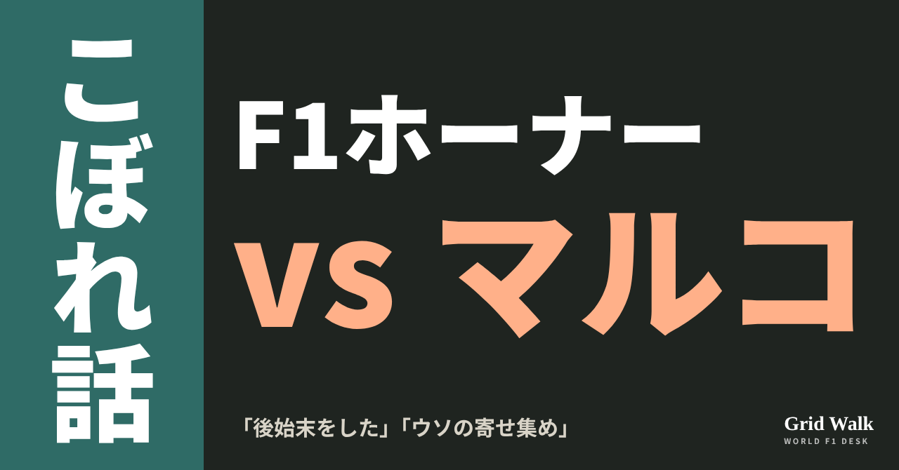
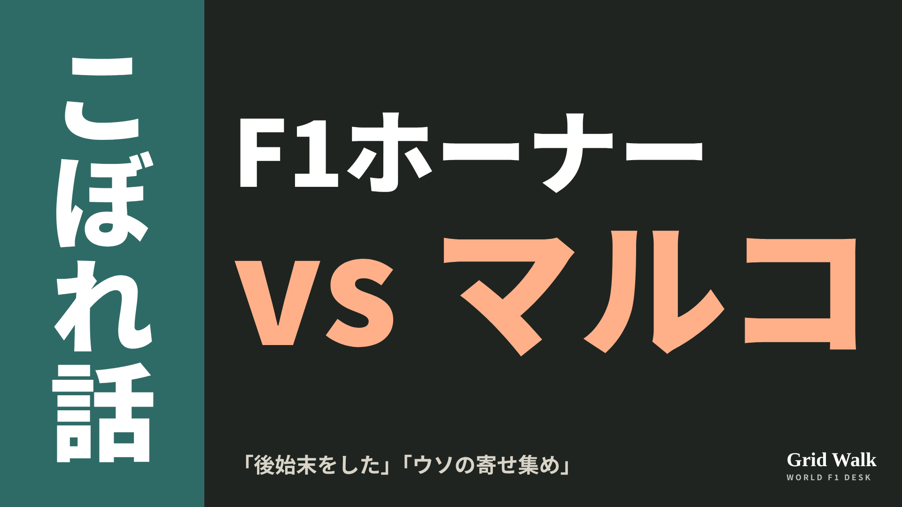

<meta charset="utf-8"><title>OFF GRID ゴシップ回 note貼り付け</title>
<style>
/* one column of numbered paste steps; text steps vs image steps differ by marker */
:root{--bg:#F5F4F0;--card:#FFFFFF;--ink:#1D2321;--mute:#5F665F;--line:#DCDAD2;--btn:#1F5FBF;--btnok:#2E8B4F;--img:#E9F3EC;--imgink:#22663B;--sans:'IBM Plex Sans JP','Hiragino Sans','Noto Sans JP',sans-serif}
@media (prefers-color-scheme:dark){:root:not([data-theme="light"]){--bg:#171A19;--card:#202423;--ink:#ECEDE8;--mute:#A3AAA2;--line:#343937;--btn:#4D8BE6;--btnok:#3FA866;--img:#1E2C23;--imgink:#8FD3A6;color-scheme:dark}}
:root[data-theme="dark"]{--bg:#171A19;--card:#202423;--ink:#ECEDE8;--mute:#A3AAA2;--line:#343937;--btn:#4D8BE6;--btnok:#3FA866;--img:#1E2C23;--imgink:#8FD3A6;color-scheme:dark}
body{background:var(--bg);color:var(--ink);font-family:var(--sans);font-size:15px;line-height:1.75;padding:20px 16px 60px}
main{max-width:680px;margin:0 auto;display:grid;gap:28px}
header h1{font-size:22px;margin:0 0 6px;text-wrap:balance}
header p{margin:0;color:var(--mute);font-size:14px}
nav{display:flex;gap:8px;flex-wrap:wrap;margin-top:12px}
nav a{border:1px solid var(--line);border-radius:999px;padding:4px 14px;color:var(--ink);text-decoration:none;font-size:14px;background:var(--card)}
.part h2{font-size:18px;line-height:1.5;margin:0 0 12px;text-wrap:balance;display:flex;gap:10px;align-items:baseline;flex-wrap:wrap}
.tag{font-size:13px;background:var(--ink);color:var(--bg);border-radius:6px;padding:1px 9px}
.steps{list-style:none;margin:0;padding:0;display:grid;gap:12px}
.st{background:var(--card);border:1px solid var(--line);border-radius:12px;padding:12px;min-width:0}
.hd{display:flex;align-items:center;gap:8px;margin-bottom:8px}
.no{width:26px;height:26px;border-radius:50%;background:var(--btn);color:#fff;display:inline-flex;align-items:center;justify-content:center;font-size:13px;font-weight:700;flex:0 0 26px}
.im .no{background:var(--btnok)}
.hd em{font-style:normal;font-size:12px;background:var(--img);color:var(--imgink);border-radius:6px;padding:0 8px}
.bx{font-size:13.5px;line-height:1.7;border:1px solid var(--line);border-radius:8px;padding:8px 10px;max-height:110px;overflow:auto;overflow-wrap:anywhere}
.bx.tall{max-height:150px}.bx p{margin:0 0 6px}.bx h2{font-size:14px;margin:8px 0 4px}.bx a{color:var(--btn)}
.st img{display:block;width:100%;max-width:100%;border:1px solid var(--line);border-radius:8px}
.sub{font-size:12.5px;color:var(--mute);margin:6px 0 0}
.cp{width:100%;margin-top:8px;padding:12px;border:0;border-radius:10px;background:var(--btn);color:#fff;font:600 15px var(--sans);cursor:pointer}
.cp.ok{background:var(--btnok)}.cp.dl{background:var(--btnok)}.cp:focus-visible{outline:3px solid var(--ink);outline-offset:2px}
.xh{font-size:15px;margin:20px 0 10px}
.fb{font-size:13px;line-height:1.7;margin:8px 0 0;padding:8px 10px;border-radius:8px;background:var(--img);color:var(--imgink)}
.opts{display:grid;grid-template-columns:repeat(auto-fill,minmax(240px,1fr));gap:10px}
.opt{min-width:0}.opt img{display:block;width:100%;border:1px solid var(--line);border-radius:8px}
.ol{display:flex;align-items:center;gap:8px;margin-top:6px}.ol b{font-size:13px;flex:0 0 auto}.ol .on{font-size:12.5px;color:var(--mute);flex:1;min-width:0}.ol .cp{width:auto;flex:0 0 auto;padding:9px 14px}.ol .cp{margin:0;padding:9px}
.toast{font-size:13px;color:var(--mute);margin-top:6px}
</style>
<main><header><h1>OFF GRID ゴシップ回 note貼り付け</h1><p>いま公開済みは1本です。青い番号は文章、緑は画像です。</p><nav><a href="#p1">1</a></nav></header><section class="part" id="p1"><h2><span class="tag">OFF GRID</span>ホーナー「関係はない」、マルコ「ウソの寄せ集め」 自伝の応酬</h2><p class="sub">サイトに公開：05:48</p><ol class="steps">
<li class="st im"><div class="hd"><span class="no">1</span><b>見出し画像</b><em>画像</em></div><button class="cp dl" data-img="img/horner-marko-book-20261025.png" data-name="horner-marko-book-20261025_見出し画像.png">ダウンロード</button></li>
<li class="st"><div class="hd"><span class="no">2</span><b>タイトル</b></div><div class="bx" id="p1t">ホーナー「関係はない」、マルコ「ウソの寄せ集め」 自伝の応酬</div><button class="cp" data-plain="p1t">タイトルをコピー</button></li>
<li class="st"><div class="hd"><span class="no">3</span><b>本文</b></div><div class="bx tall" id="p1r"><p>「この本はウソの寄せ集め」。レッドブルの元代表クリスチャン・ホーナーの自伝『Drive』に、ヘルムート・マルコが返したのはこの一言でした。20年いっしょに働いた2人ですが、今は「関係はない」とホーナー自身が話しています。本に出てくるドライバーや設計者も、それぞれ答えています。</p><p>マルコが今月はじめに出した反論など、関連する要約と元の記事へのリンクはサイトで → <a href="https://f1gridwalk.github.io/lens/horner-marko-book-20261025/?utm_source=note&amp;utm_campaign=horner-marko-book-20261025">https://f1gridwalk.github.io/lens/horner-marko-book-20261025/?utm_source=note&amp;utm_campaign=horner-marko-book-20261025</a></p><h2>ホーナー「関係はない」「時々はね」</h2><p>ホーナーは独タブロイド紙ビルトのインタビューで、マルコとの関係を聞かれ、こう答えたとオランダのGPblogが伝えています。</p><blockquote><p>「関係はない」（ホーナー、ビルトのインタビューをGPblog／オランダが報道）</p></blockquote><p>最後に会ったのは、ホーナーがチームにいた最後の日。ホーナーの部屋で座って握手をしました。それからは「音信不通」で、本人はそれで構わないそうです。ただ、こうも話しています。</p><blockquote><p>「私にも、彼をひどくいら立たせたところは確かにあった」（同）</p></blockquote><p>代表就任を後押ししてくれたマルコには大きな恩がある、とも認めたそうです。</p><p>ポッドキャスト「Up to Speed」では、マルコが起こした面倒の後始末をしていたと感じるかと聞かれ、こう答えています。</p><blockquote><p>「まあ、時々はね」（ホーナー、ポッドキャスト「Up to Speed」、GPblog／オランダ）</p></blockquote><h2>マルコ「細かく話すつもりはない」</h2><p>マルコの答えを、イギリスのGPFansとF1 Oversteerはビルトへの発言として、PlanetF1はドイツのF1-Insiderの問いへの答えとして伝えています。</p><blockquote><p>「この本はウソの寄せ集めで、細かく話すつもりはない」（マルコ、ビルトへの発言をGPFans／イギリスが報道）</p></blockquote><p>どこがウソかは挙げていません。フェルスタッペンの加入をめぐる記述には、今月はじめにもオーストリア紙で反論していました（サイトの要約 https://f1gridwalk.github.io/news/nl-gpblog-marko-horner-verstappen/ ）。</p><h2>本に出てくる4人の答え</h2><p>【ニューウェイ】（アストンマーティン）　本には、2014年に「逆境の最初の兆しで、エイドリアンは船を降りたがった」とあります。ニューウェイは本をまだ読んでいないとしつつ、当時はパワーユニットのメーカー（ルノー）に問題を直す気が見えなかったと説明しました。</p><blockquote><p>「だから、僕の痛みと不満を想像してもらえるだろう」「クリスチャンは、たぶんそれを完全には分かっていなかったと思う」（ニューウェイ、オースティンでの会見、GPFans／イギリス）</p></blockquote><p>【ラッセル】（メルセデス）　本によると、ホーナーは2025年のイギリスGPのころ、ラッセルの代理人に接触しました。メルセデスのウォルフ代表がフェルスタッペンを追っていたことへの対抗策だったといいます（サイトの要約 https://f1gridwalk.github.io/news/nl-gpblog-russell-horner-tactical/ ）。ラッセルはオースティンでこう答えました。</p><blockquote><p>「正直に言って、全く真剣ではなかった」「メルセデス以外で走るつもりは全くなかった」「全部駆け引きだったと思う」（ラッセル、GPblog／オランダ）</p></blockquote><p>【フェルスタッペン】（レッドブル）　オースティンのメディアデーで本について聞かれ、どこが正しくどこが違うかを、ここで言う必要もないと話しました（サイトの要約 https://f1gridwalk.github.io/news/de-formel1de-verstappen-horner-book/ ）。</p><blockquote><p>「本は読んでいない。正直、僕はそもそも本を読まないんだ」「そういうことは全部、過去に起きたこと」（フェルスタッペン、GPblog／オランダ）</p></blockquote><p>【サインツ】（ウィリアムズ）　本には、2026年にフェルスタッペンと組ませる話をしたとあり、ホーナーは「チームのために身を粉にして働くと分かっていた」と評しています。サインツはマドリードで、スペインのテレビ番組「El Chiringuito」に短く答えました。</p><blockquote><p>「うん、僕が彼の家で夕食をとっていたと言っていたね。そういうことだよ」（サインツ、GPblog／オランダ）</p></blockquote><p>編集部としては、ニューウェイの「完全には分かっていなかった」が、本と本人の受け止めのずれをいちばんよく表していると見ています。</p><p><strong>マルコと4人の答えで、いちばん本音に近いと思うのは誰ですか？</strong></p><p>━━━━━━━━━━</p><p><strong>F1 Grid Walk では、世界のF1ニュースを毎日日本語でまとめています。</strong></p><p>海外の記事の要約を、毎日載せています。</p><p><a href="https://f1gridwalk.github.io/">https://f1gridwalk.github.io/</a></p><p>ほかの海外記事も読みたい方は、F1 Grid Walkへ。</p><p><a href="https://f1gridwalk.github.io/lens/horner-marko-book-20261025/">https://f1gridwalk.github.io/lens/horner-marko-book-20261025/</a></p><p>━━━━━━━━━━</p><p><a href="https://www.gpblog.com/en/news/christian-horner-reveals-relationship-with-helmut-marko-is-toast-after-red-bull-exit">出典：GPblog（オランダ）</a></p><p><a href="https://www.gpblog.com/en/news/horner-reveals-he-had-to-clean-up-markos-mess-behind-the-scenes-at-red-bull">出典：GPblog（オランダ）</a></p><p><a href="https://www.gpfans.com/en/f1-news/1091742/f1-helmut-marko-christian-horner-row-red-bull-sacking-untruths/">出典：GPFans（イギリス）</a></p><p><a href="https://www.f1oversteer.com/news/helmut-marko-calls-out-christian-horners-untruths-after-former-red-bull-chiefs-hurt-accusation/">出典：F1 Oversteer（イギリス）</a></p><p><a href="https://www.planetf1.com/news/helmut-marko-christian-horner-untruths">出典：PlanetF1（イギリス）</a></p><p><a href="https://www.gpfans.com/en/f1-news/1091885/f1-adrian-newey-red-bull-leave-why-christian-horner-book/">出典：GPFans（イギリス）</a></p><p><a href="https://www.gpblog.com/nl/nieuws/russell-ontkracht-verhaal-van-horner-over-interesse-in-red-bull-allemaal-tactisch">出典：GPblog（オランダ）</a></p><p><a href="https://www.gpblog.com/en/news/verstappen-gives-blunt-verdict-on-horners-book-that-is-all-in-the-past">出典：GPblog（オランダ）</a></p><p><a href="https://www.gpblog.com/en/news/sainz-breaks-silence-on-horners-claims-over-failed-red-bull-move">出典：GPblog（オランダ）</a></p></div><button class="cp" data-rich="p1r">本文をコピー</button></li>
<li class="st"><div class="hd"><span class="no">4</span><b>ハッシュタグ</b></div><div class="bx" id="p1h">#F1 #F1jp #ホーナー #マルコ #レッドブル #ニューウェイ #アメリカGP #F1ゴシップ #F1こぼれ話 #OFFGRID</div><button class="cp" data-plain="p1h">タグをコピー</button></li>
</ol><h3 class="xh">X</h3><ol class="steps">
<li class="st im"><div class="hd"><b>X用の画像</b><em>画像</em></div><button class="cp dl" data-img="img/x_horner-marko-book-20261025.png" data-name="x_horner-marko-book-20261025.png">ダウンロード</button></li>
<li class="st"><div class="hd"><b>① noteをシェアするときの文</b></div><div class="bx" id="p1x0">ホーナーは自伝の話の中でマルコとは「関係はない」、マルコはその本を「ウソの寄せ集め」。20年組んだ2人の応酬に、本に出てくるニューウェイ、ラッセル、フェルスタッペン、サインツの返事もそろえてnoteにまとめました #F1jp #F1ゴシップ</div><button class="cp" data-plain="p1x0">コピー</button></li>
<li class="st"><div class="hd"><b>② ①への返信</b></div><div class="bx" id="p1x1">ほかの海外記事も読みたい方は、F1 Grid Walkへ。
https://f1gridwalk.github.io/lens/horner-marko-book-20261025/?utm_source=x&amp;utm_campaign=horner-marko-book-20261025</div><button class="cp" data-plain="p1x1">コピー</button></li>
<li class="st"><div class="hd"><b>③ ②への返信</b></div><div class="bx" id="p1x2">毎日の海外F1ニュースは、日本語でこちらにまとめています。
https://f1gridwalk.github.io/</div><button class="cp" data-plain="p1x2">コピー</button></li>
</ol></section></main><script>
function done(b,msg){const t=b.dataset.t||b.textContent;b.dataset.t=t;b.classList.add('ok');b.textContent=msg||'コピーしました';setTimeout(()=>{b.classList.remove('ok');b.textContent=t},2000)}
function selectEl(el){const r=document.createRange();r.selectNodeContents(el);const s=getSelection();s.removeAllRanges();s.addRange(r)}
async function rich(el,b){
  try{await navigator.clipboard.write([new ClipboardItem({'text/html':new Blob([el.innerHTML],{type:'text/html'}),'text/plain':new Blob([el.innerText],{type:'text/plain'})})]);done(b);return}catch(e){}
  selectEl(el);let ok=false;try{ok=document.execCommand('copy')}catch(e){}
  if(ok){getSelection().removeAllRanges();done(b)}else{done(b,'選択しました。コピーしてください')}}
async function plain(el,b){
  try{await navigator.clipboard.writeText(el.innerText);done(b);return}catch(e){}
  selectEl(el);let ok=false;try{ok=document.execCommand('copy')}catch(e){}
  if(ok){getSelection().removeAllRanges();done(b)}else{done(b,'選択しました。コピーしてください')}}
let dlns=null;(async()=>{try{dlns=await window.claude?.use?.("downloads")}catch(e){dlns=null}})();
async function img(src,b){
  b.dataset.t=b.dataset.t||b.textContent;
  if(!dlns){try{dlns=await window.claude?.use?.("downloads")}catch(e){}}
  if(!dlns){b.textContent='ダウンロードできませんでした';setTimeout(()=>{b.textContent=b.dataset.t},3500);return}
  try{const blob=await fetch(src).then(r=>r.blob());b.textContent='保存の確認を開いています…';
    await dlns.save({filename:b.dataset.name,data:blob});done(b,'ダウンロードしました')}
  catch(e){const c=e&&e.code;b.textContent=c==='declined'?'キャンセルしました':c==='rate_limited'?'少し待ってからもう一度押してください':'ダウンロードできませんでした';setTimeout(()=>{b.textContent=b.dataset.t},3500)}}
document.querySelectorAll('.cp').forEach(b=>b.addEventListener('click',()=>{
  if(b.dataset.rich)rich(document.getElementById(b.dataset.rich),b);
  else if(b.dataset.plain)plain(document.getElementById(b.dataset.plain),b);
  else img(b.dataset.img,b)}));
</script>